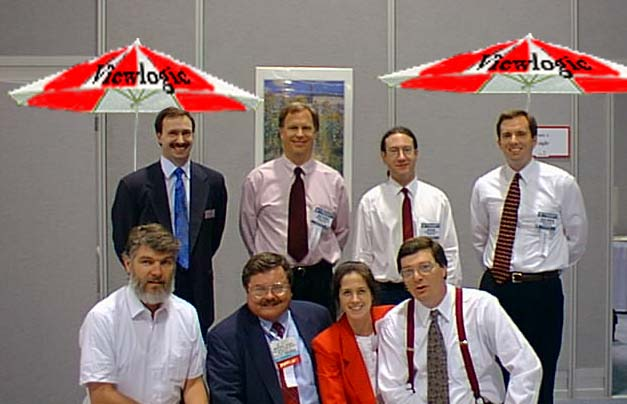
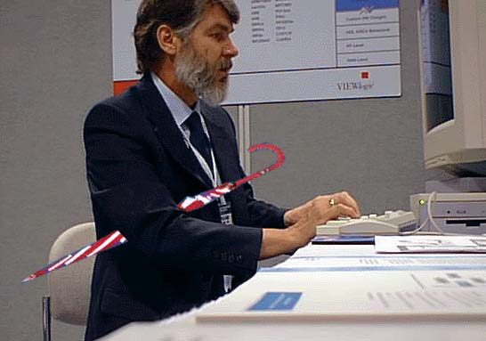
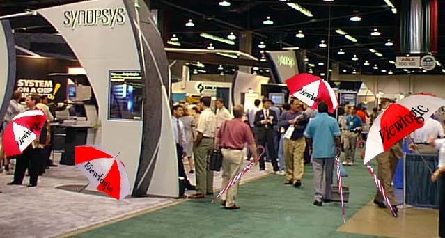
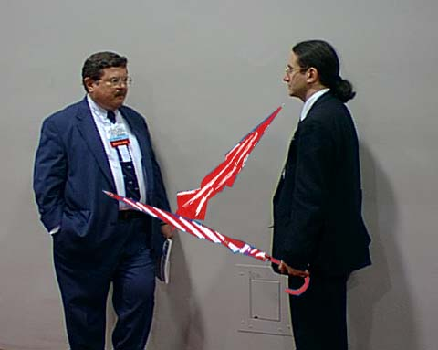
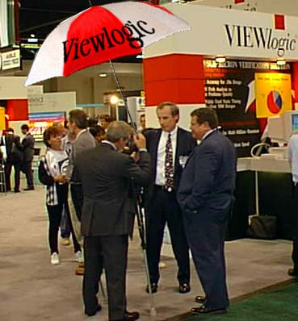
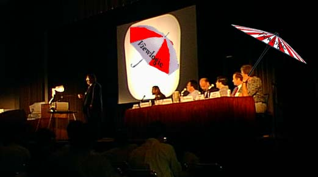
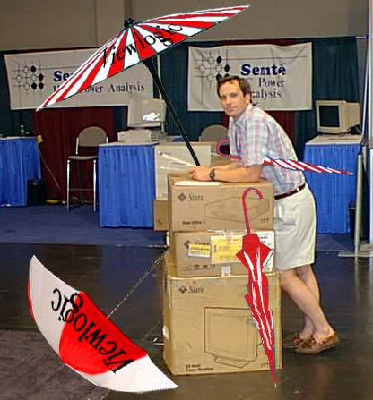

Revisionist DAC '97
It seems that there may be a bit of a disagreement on what exactly
happened at DAC.
On the one hand we have someone from Viewlogic
(gsidoti@viewlogic.com) talking about "fabulous" events, throngs
"swelling", "overflowing" and voicing as one... On the other hand we
have Rainer and Mike talking about "hyperbole" and possible
overstatment of enthusiasm.
It's clear that when you cross one too many creative writing
seminars with a Public Relations, uh, soul, there is a potential
danger.
Let's pause for a moment and imagine what sort of world it might be
if the PR was correct. What if DAC was exactly like gsidoti
saw it?
With that in mind, let's look back on some of the pictures Rainer
provided us with and look at them not with the cold, hard edge of
truth, but with the warm, fuzzy glow of those rose colored glasses
that PR people are issued upon accepting the job...

In our first picture, the happy crew looks forward to the "cacophony
of the DAC floor". They smile as the anticipate the attendees voices
rising as one ... "How do I get a Viewlogic golf umbrella?"

Rainer seems to be having a difficult time typing while holding on to
the most sought after DAC toy.

Sure enough! The floor is alive ... with the sight of umbrellas!
It's a Viewlogic World! Even the Synopsys booth appears to be getting
in on the fun. Bet Tony wishes he had a Viewlogic Golf umbrella.

Geoff and Bart pause for a few minutes from the hectic but rewarding
demos suites to playfully fight over whose umbrella is bigger. (Now
guys, it's not the size of the umbrella, it's whether you stay dry!)

Gordon and Geoff try and try to explain to a confused DAC attendee
that leaving the umbrella open while inside the convention center is
bad luck. He just loves his umbrella! What are you going to
do?

Geoff presents to a packed house on the topic "How do I get one of
those cool umbrellas?" Someone else on the panel clearly know that
answer already!

Bruce will always remember DAC'97. Especially with his own personal
collection of Viewlogic Golf Umbrellas! Good job, Bruce!
Well, I hope you have enjoyed this look at how the world would be
better if we just took the time to not actually accept reality and
were all willing to share in a little overstatement, hyperbole and
out and out exaggeration. Now would that be so bad?
Darrin Mossor - June 13, 1997
Darrin Mossor - HomePage
Last modified: Tue Apr 14 11:33:00 1998